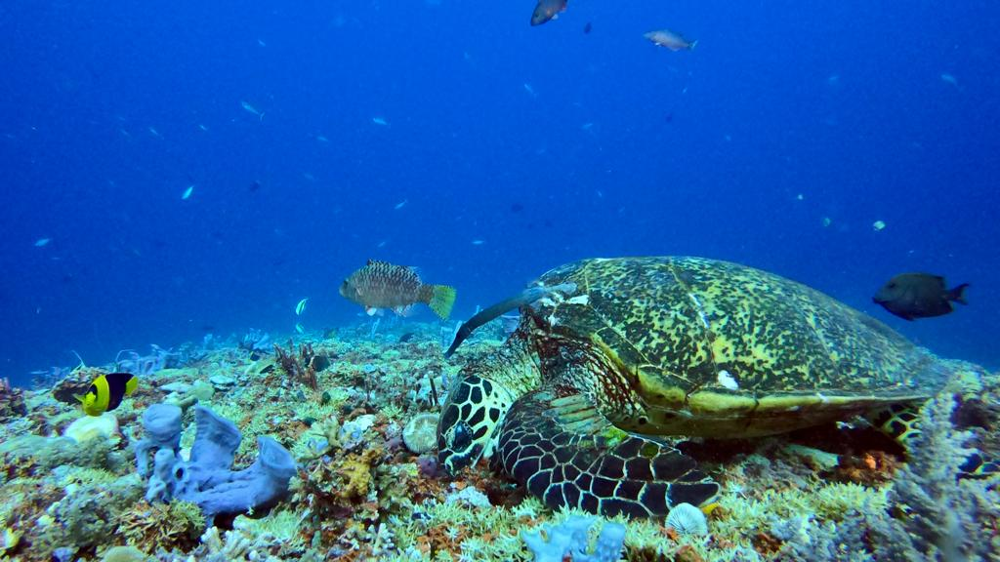
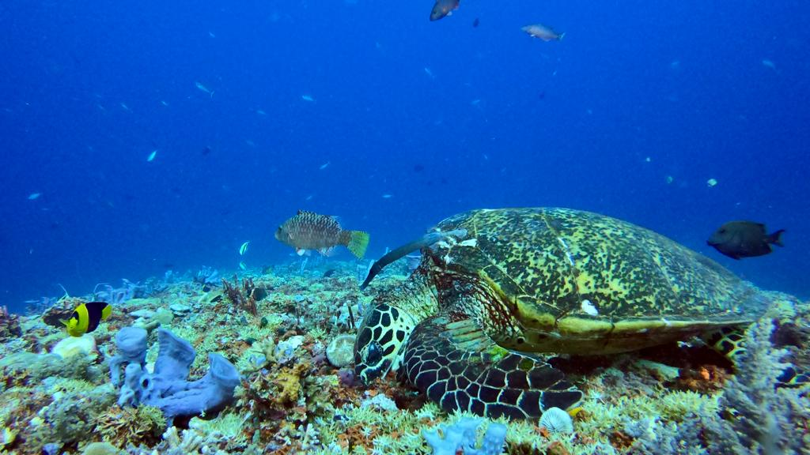

Many years ago I discovered the joy of making people happy, and I have tried to carry that through my life and career. I enjoyed many different positions over the years. A common thread has been communication and listening; allowing people to feel heard and appreciated. I enjoy hearing people's stories and their goals—both personal and professional.
I have successfully helped clients grow their businesses through sales; helping them grow their market presence, and helping with growth strategies.
I am passionate about the outdoors and being as sustainable as possible, creating a space on this planet that all can enjoy. Travelling allows me to meet new people and see new places, finding and cherishing how we are all connected.
I look forward to blending all of my experiences in assisting with all of your marketing needs.
I enjoy traveling with my wife around the world. There are so many magical places to see and wondorous beaches and forests to explore.


 
